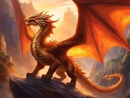
Dragon occidentalwiki-fr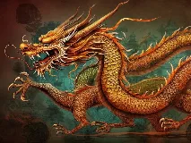
Dragon chinoiswiki-fr
Phénixwiki-fr
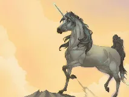
Licornewiki-fr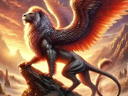
Griffonwiki-fr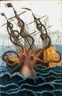
Krakenbing
Sirène (folklore)wiki-fr
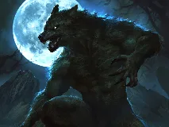
Loup Garouwiki-fr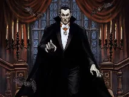
Vampirewiki-fr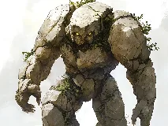
Golemwiki-fr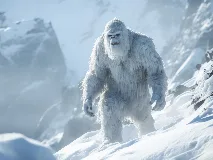
Yétiwiki-fr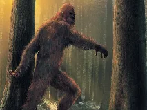
Bigfootwiki-fr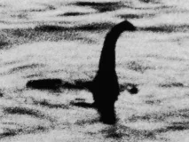
Monstre du loch Nesswiki-fr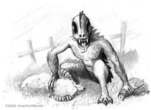
Chupacabrabing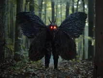
Mothmanwiki-fr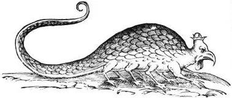
Basilic (créature)bing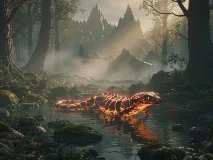
Salamandre elementairewiki-fr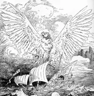
Rocbing
Féewiki-fr
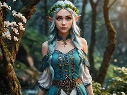
Elfewiki-fr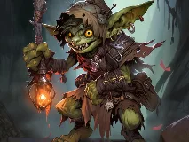
Gobelinwiki-fr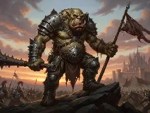
Ogrewiki-fr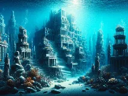
Atlantidewiki-fr
El Doradobing
Shangri-Labing
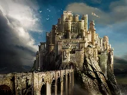
Camelotwiki-fr Jardin d'Édenwiki-fr
Jardin d'Édenwiki-fr Lémuriewiki-fr
Lémuriewiki-fr Avalonwiki-fr
Avalonwiki-fr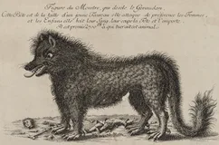
Bête du Gévaudanwiki-fr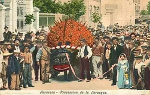
Tarasquebing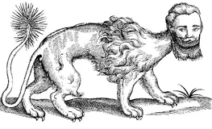
Manticorewiki-fr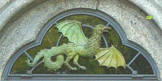
Cockatricewiki-fr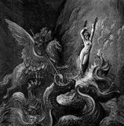
Hippogriffewiki-fr Léviathanwiki-fr
Léviathanwiki-fr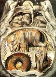
Béhémothwiki-fr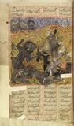
Djinnwiki-fr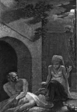
Goulewiki-fr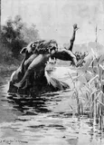
Bunyipwiki-fr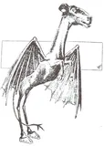
Jersey Devilwiki-fr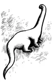
Mokèlé-mbembéwiki-fr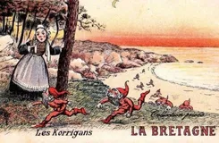
Korriganwiki-fr
Zombiewiki-fr
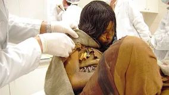
Momiewiki-fr
Gnomewiki-fr